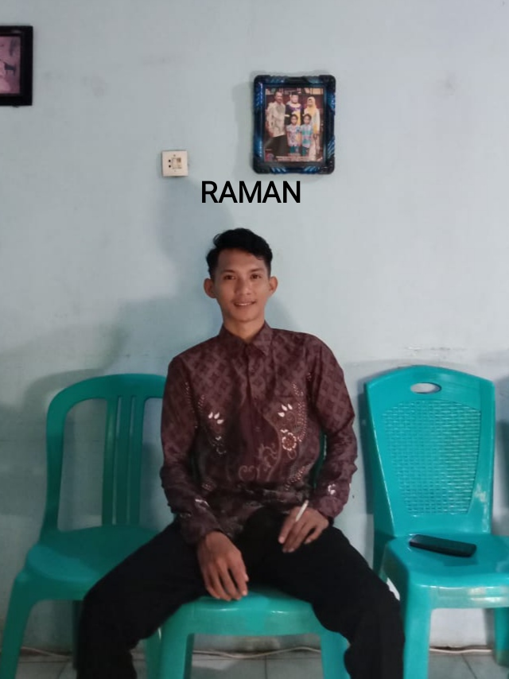

Potayam Project adalah website yang di sediakan untuk sekumpulan pemuda PENLUKYAM (Penakluk ayam).
Potayam Project di dirikan pada tahun 2024, potayam project ini beranggotakan beberapa orang yang mempunyai peran penting di dalamnya, dan inilah beberapa orang tersebut.
b1.Pakuni Bin Ambulati
Pakuni adalah keturunan dari turun keturunnya si turunan
2.Jordy Bin Halandui
Jordy adalah tangan kanan si pakuni, lihat saja fotonya gelap, karena orangnya suka hinggap di kusu-kusu katanya.
3.Fajrin Bin Kobolo
Fajrin, ya seperti Bin nya Bin Kobolo, orangnya emang kobolo banget, lihat saja mukanya kayak buronan memek.
4.Afdal Bin Bungolo
untuk yang ini silahkan di nilai sendiri, di bilang laki tapi yaaah, ya afdal adalah panglima dari potayam di mana ada ayam di situ ada afdal ya. Di beritakan juga, dia selalu lewat jendela demi ngewe ya gys. Nama malamnya sisgot (sieka-sieka got).
5.Raman Bin Loco
ya dialah raman, pemuda ini mempunyai peran penting dalam potayam, stelah ayam di eksekusi dialah, raman si puru dandang, yang akan menghabiskan ayamnya sampai ke dandang-dandangnya. Di beritakan juga dia pernah terciduk ngeloco ya gys.
6.Nino Bin Huwodulo
Nino, dialah sosok yang sangat bisa menghantui kaum wanita ya, khususnya di kalangan janda Tua, dia menyukai memek kriput ya gys ya.
Dan untuk deskripsi selanjutnya, akan kita lampirkan di bulan depan.
Thanks.